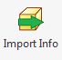

Part Information Form
Accessible: Assembly and Part Ribbons

Fields
- Indicates Part Number.
- Short description of part.
- How the part will be measured.
- Complete detail description of part.
- Indicates finished product or raw material
- Where it is available, not for sale etc.
- Category of the part
- Is it made in shop or purchased.
- Customer the part is being made for.
- Sales order number of part
- Designer of part.
- Manufacturer name (Purchased)
- Manufacturer number (Purchased)
Buttons
- Help button that displays the meanings of all the options in drop down menus.
- Button that auto-selects some options to make it a purchased part.
- Button that auto-selects some options to make it a manufactured part.
- Saves information and uploads it to Manage 2000.
- Saves information locally
- Cancels current updates.
What It Does
This form will allot the user to create or update part information in Manage 2000. It will take some information already created in Inventor and automatically fill out this portion.